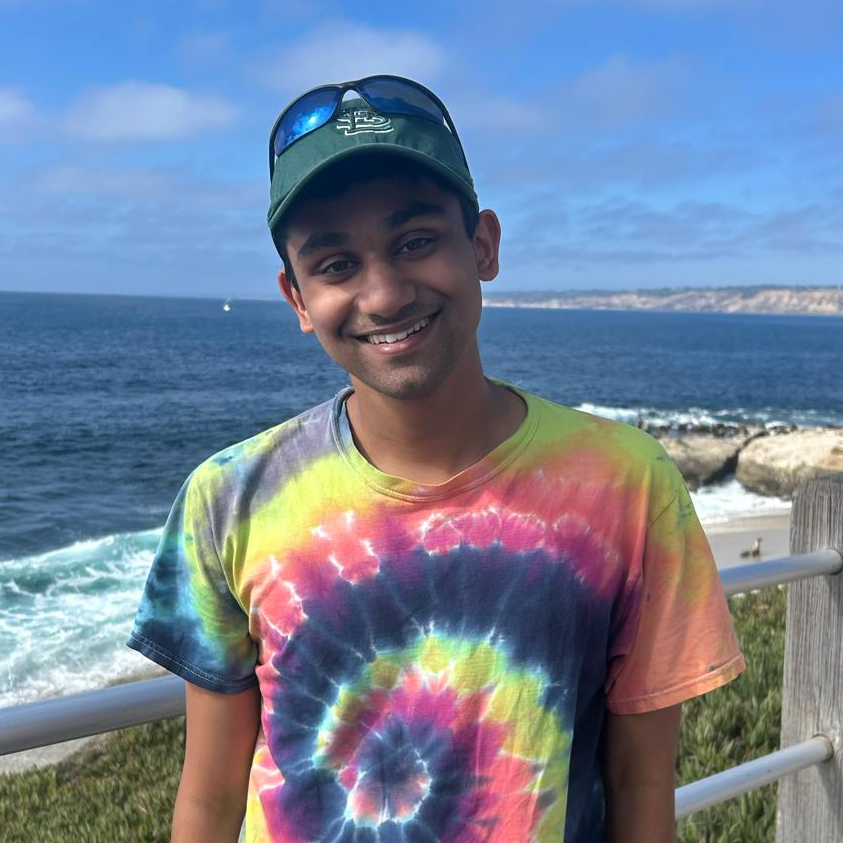
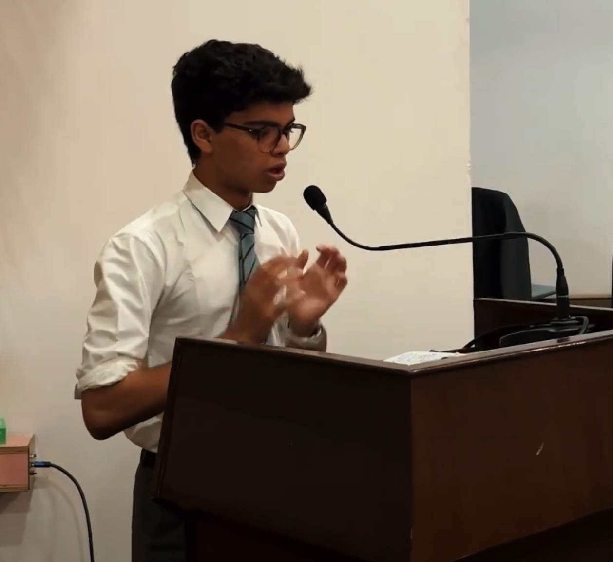
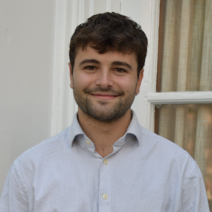
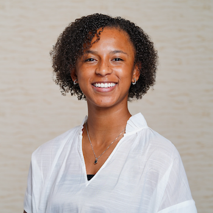
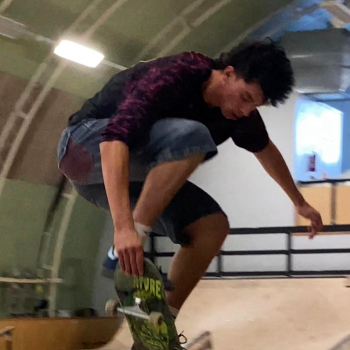

Charles Crabtree
Charles Crabtree is a Senior Lecturer in Monash's School of Social Sciences, where he directs the Fundamental Needs Lab. His research examines discrimination—often among understudied identity groups and in underexplored contexts—with an emphasis on improving measurement and using field and survey experiments in the United States, Eastern Europe, and Japan. His work has appeared in the American Journal of Political Science, American Political Science Review, British Journal of Political Science, Journal of Politics, Nature Human Behaviour, Political Analysis, Public Administration Review, and the Proceedings of the National Academy of Sciences.

Jayanth Uppalari
Jayanth Uppaluri is a MSc student in Political Science at the University of Leeds, attending as a Fulbright Scholar. Before this, he graduated from Dartmouth College with a degree in Government (high honors) and Music and spent a year in Hanover post-grad working for Prof. Crabtree as a pre-doc and research assistant. His personal research focuses on public opinion of disability and disability policy in the U.S, as well as the effects of geography and regionalism on U.S politics.

Aditya Chirag Koradia
Aditya Chirag Koradia is a student at The Doon School pursuing the IBDP curriculum. He is an avid researcher in the fields of public policy and gender discrimination, with a passion project focused on empowering marginalized women in Awadh Nagar along the Indo-Pak border. He is a seasoned debater and MUN participant and aspires to study government and economics at university.
Sergey Polstyanov
Sergey Polstyanov is a precocious fourth-grade student who is curious and fair-minded. He assists the group with several "many labs" style projects. In his free time, he enjoys chess, music, swimming, language learning, traveling, and playing games with friends.
Alumni

Evan McMahon
Evan McMahon, a senior at Dartmouth from Chicago, IL, is motivated to coordinate health financing initiatives that strengthen health systems in the Americas. His experience working with Eritrean refugees in Israel and volunteering on ambulances in Jerusalem sparked his interest in migration and health. He created semi-structured interview guides for FNL projects focused on surveying individuals experiencing homelessness and food insecurity.

Jenna Brown
Jenna Brown is a senior at Dartmouth, majoring in Politics, Philosophy, and Economics and minoring in Education. She is on the Dartmouth Varsity Softball team, an SVPP First-Year Facilitator, and serves as an executive board member for the Dartmouth Black Student Athlete Alliance.

Trenton Jiang
Trenton Jiang is a senior at Dartmouth College, studying psychology and government with an emphasis on security issues. He speaks Spanish and Mandarin. Outside of academics, he is deeply passionate about sports and spending time in nature.